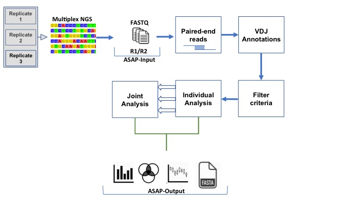

Introduction
Next-generation sequencing (NGS) of antibody variable region has emerged as a powerful tool in systems
immunology by providing qualitative and quantitative molecular measures on antibody polyclonal
composition [
1-3]. Reproducible and robust information on antibody
repertoires is invaluable for basic and applied immunology studies. However, major computational
challenges exist when analyzing antibody sequences. For example, error handling, computing
somatic hypermutation levels, and V(D)J family assignments.
What is ASAP?
ASAP webserver is user-friendly, free and open to all users and there is no login requirement.
ASAP facilitates bioinformatics analyses on NGS antibody V gene data. One of the strengths of
ASAP is that it allows analyzing experimental replicates, which is valuable for increasing the
signal-to-noise ratio. Another major component is to upload the NGS data as obtained from the
sequencing machine without any need for preprocessing. ASAP is applicable for researchers that
are interested to address basic questions related to B cell development and differentiation as
well as applied researchers.
Input
Paired-end (R1 and R2) from one or more datasets (up to three replicates) in
Fastq format. These datasets can be derived
from high throughput sequencing of human or murine antibody variable regions. Default parameters are
pre-defined thus enabling the usage by non-expert users. However, advanced users can further
select parameters to customize their analysis.

Output and methodology
By far the highest diversity in antibodies occurs within the CDR3 region, which
is overwhelmingly responsible for antigen recognition
[
4,
5].
The CDR3 is thus considered as a unique identifier of antibody clones. Our methodology is
divided into individual and joint parts.
The individual part applies standard approaches of antibody variable region sequences filtration and
annotation using germline sequences from the
international
immunogenetics information system (IMGT) [
6]. The ASAP webserver uses
MiXCR [
7] for the initial paired-end assembly and germline annotation and
ASAP further filters and preforms statistical calculations of somatic hypermutation rates, CDR3
lengths distribution, somatic hyphermutation, V(D)J family assignments and V(D)J recombination
linkage.
In the joint part of the ASAP webserver, additional information is obtained by analyzing the
commonalities and differences between multiple experimental repeats. ASAP examines the variable region
sequences and their frequency in each replicate to determine which sequences are less likely to
be a result of a sample preparation derived and/or sequencing errors. ASAP provides information
regarding the intersection of data between replicates and the correlation between samples. It
also consolidates a final database (FASTA format) of all sequences passing the inclusion
criteria. The final file includes also meta-data regarding the germline family usage and the
prevalence of the sequences in all replicates.
All these analyses are presented graphically, as can be demonstrated in our
gallery section.
References
Lavinder, J. J. et al. Proc Natl Acad Sci USA 111, 2259-2264 (2014).
Wine, Y. et al. Proc Natl Acad Sci USA 110, 2993-2998 (2013).
Georgiou, G. et al. Nat Biotech 32, 158-168 (2014).
Xu, J. L. et al. Immunity 13, 37-45 (2000).
Murphy, K. et al. Janeway's immunobiology. (Garland Science, 2012).
Lefranc, M.-P. et al. Nucleic Acids Research 27, 209-212 (1999).
Bolotin, D. A. et al. Nature Methods 12, 380 (2015).